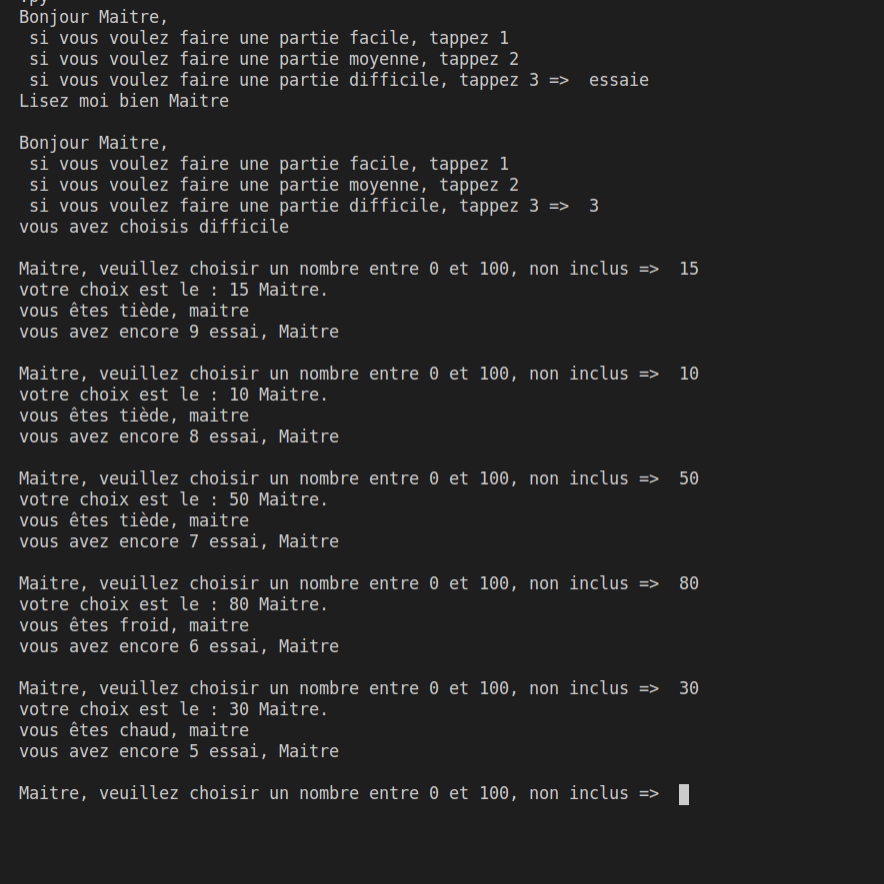
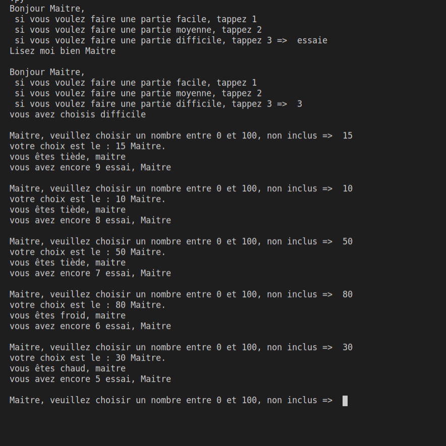

chaud froid

Ceci est un petit script permettant de jouer au fameux jeu du chaud froid. il est décliné en 3 niveaux de difficultés, le l'ordinateur pense un nombre et le joueur doit le deviner.
Vous pourrez voir ici différents projets que j'ai effectué, ou qui sont en cours.
Ceci est un petit script permettant de jouer au fameux jeu du chaud froid. il est décliné en 3 niveaux de difficultés, le l'ordinateur pense un nombre et le joueur doit le deviner.

Voici un shifumi version startrek, vu dans la célèbre série BigBangTheory le joueur défini un certain nombre de manche et joue contre l'ordinateur


Dans le cadre de ma formation, je me suis inscrit à un projet "intercampus". Nous allons créer :
- un réseau social pour l'ensemble des personnes étudiant dans un campus academy
- un fil d'actualité tournant autour du campus academy
- un jeu mobile mettant en concurrence les différents campus.
Nous sommes actuellement au stade de la montée en compétence sur Angular, nous n'avons pas encore de prototype, et donc malheuresement pas de photo a vous montrer.
{kind=link}